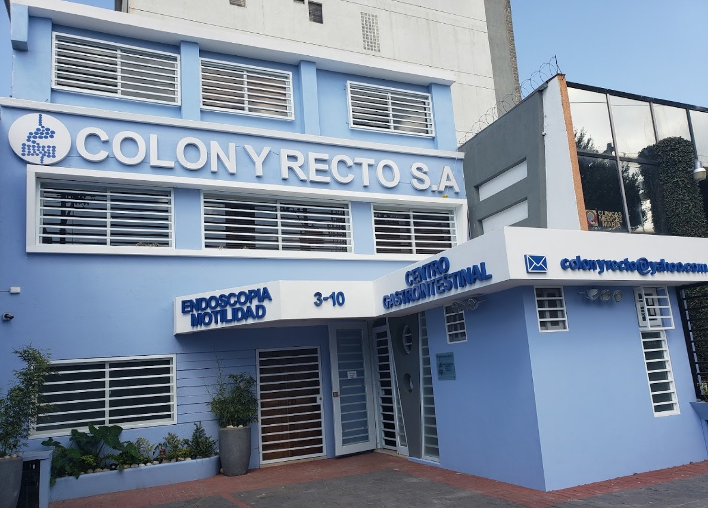
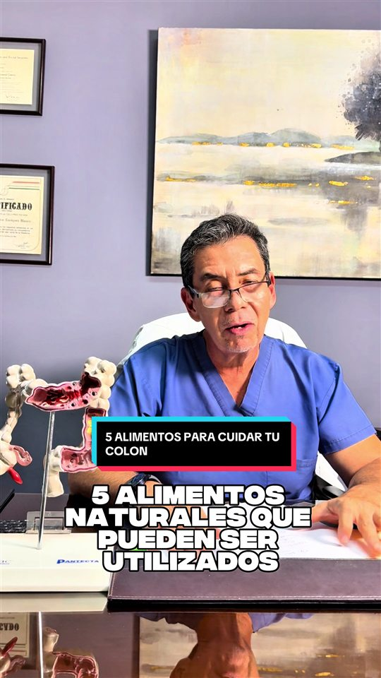
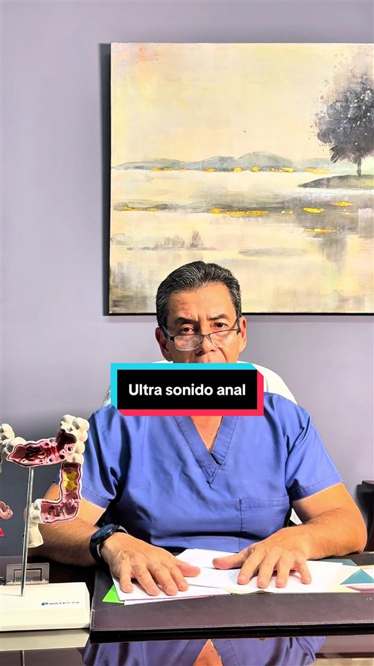
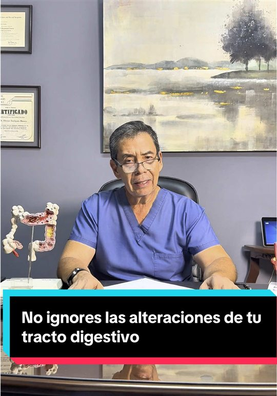

Videoendoscopía
Colonoscopía, endoscopía digestiva alta y rectosigmoidoscopía con video de alta definición.
Coloproctología y gastroenterología
La experiencia hace la diferencia. El Dr. Héctor Enríquez Blanco, con más de 35 años de experiencia, atiende junto a un equipo de profesionales en un centro dedicado a su salud digestiva.
+35
Años de experiencia
7
Áreas de consulta
Unidad de motilidad
y fisiología anorrectal
Cirugía ambulatoria
y procedimientos de día
Experiencia
Tecnología
Trato humano
Nosotros
Colon y Recto S.A. es un centro gastrointestinal en la Ciudad de Guatemala, dirigido por el Dr. Héctor Enríquez Blanco, especialista en enfermedades del colon, recto y ano, la coloproctología. Con más de 35 años de experiencia, atiende al frente de un equipo de profesionales que acompaña a cada paciente en su diagnóstico y tratamiento.
Reunimos en un mismo lugar las unidades necesarias para estudiar y tratar las condiciones del aparato digestivo bajo, con videoendoscopía, motilidad y fisiología anorrectal, ultrasonido, patología y cirugía ambulatoria. Así su evaluación es completa y ordenada, de principio a fin.
Creemos que una buena medicina une tecnología moderna con un trato humano y cercano. La experiencia hace la diferencia, y la ponemos al servicio de su comodidad y su confianza.
Servicios y unidades
Contamos con unidades especializadas para estudiar, diagnosticar y tratar las enfermedades del colon, recto y ano en un mismo centro.
Colonoscopía, endoscopía digestiva alta y rectosigmoidoscopía con video de alta definición.
Manometría esofágica y anorrectal, electromiografía, pH-metría, biofeedback y pruebas de aliento con hidrógeno.
Ultrasonidos abdominales, pélvicos, endoanal y endorrectal, cinedefecografía y tránsito colónico.
Procedimientos de oficina y ambulatorios, con recuperación el mismo día.
Biopsias, citología, histopatología e inmunohistoquímica.
Psicología digestiva, unidad de piso pélvico y nutrición.
Analgesia, sedación y bloqueos regionales para su comodidad y seguridad.
Servicio de emergencias y farmacia con medicamentos registrados.
Consultas frecuentes
Algunas de las condiciones del colon, recto y ano que evaluamos y tratamos con frecuencia.
Venas inflamadas en el ano y el recto que pueden causar sangrado, molestia o picazón. Existen tratamientos de oficina y quirúrgicos según el caso.
Trastorno frecuente que causa dolor abdominal, distensión y cambios en el hábito intestinal. Se maneja con un diagnóstico cuidadoso, dieta y tratamiento.
Dificultad o baja frecuencia para evacuar. Estudiamos la causa y ofrecemos tratamiento médico y de piso pélvico.
Crecimientos en el revestimiento del colon que pueden detectarse y extirparse durante una colonoscopía, lo que ayuda a prevenir el cáncer colorrectal.
Pequeñas bolsas en la pared del colon que pueden inflamarse. Ofrecemos diagnóstico y manejo médico o quirúrgico.
Dolor anal que puede deberse a una fisura u otras causas. Realizamos el diagnóstico y el tratamiento para aliviarlo.
Pérdida del control para retener las heces. Contamos con una unidad de fisiología anorrectal y biofeedback para tratarla.
Esta información es informativa. El diagnóstico siempre se realiza en consulta con el especialista.

Nuestras instalaciones
Nuestro Centro Gastrointestinal en la Zona 10 reúne, en un mismo edificio, las unidades de endoscopía, motilidad, laboratorio de patología, ultrasonido y farmacia. Así su estudio, su diagnóstico y su tratamiento se coordinan en un ambiente cómodo y seguro.
Un breve recorrido por el centro y nuestras especialidades.

Información para pacientes
Una buena preparación hace que su estudio sea más seguro y más preciso. En la clínica le entregamos instrucciones detalladas para su caso, que por lo general incluyen.
Siga siempre las instrucciones específicas de su médico.
El estudio se realiza con sedación para su comodidad, por lo que la mayoría de las personas no siente dolor durante el procedimiento.
Sí. Se requiere preparar el colon antes del estudio y, al agendar su cita, le daremos las indicaciones detalladas para hacerlo correctamente.
En general a partir de los 45 a 50 años, o antes si hay síntomas o antecedentes familiares. Consúltelo con el especialista para una recomendación según su caso.
Sí. Contamos con servicio de emergencias, disponible por la línea de emergencias y por WhatsApp al (+502) 5201-7803.
Puede agendar por teléfono, por WhatsApp o con el formulario de este sitio. Una vez recibida su solicitud, le confirmamos la fecha y la hora.
Contenido educativo
El Dr. Enríquez Blanco comparte información y consejos de salud digestiva en TikTok. Toque un video para verlo, o síganos para ver todo el contenido.

5 alimentos para cuidar su colon
TikTok · @colonyrectosa

El ultrasonido anal, en qué consiste
TikTok · @colonyrectosa

No ignore las alteraciones digestivas
TikTok · @colonyrectosa
Contacto
Comuníquese con nosotros por teléfono, WhatsApp o el formulario. Con gusto le atendemos.
Complete sus datos y nos comunicaremos para confirmar.